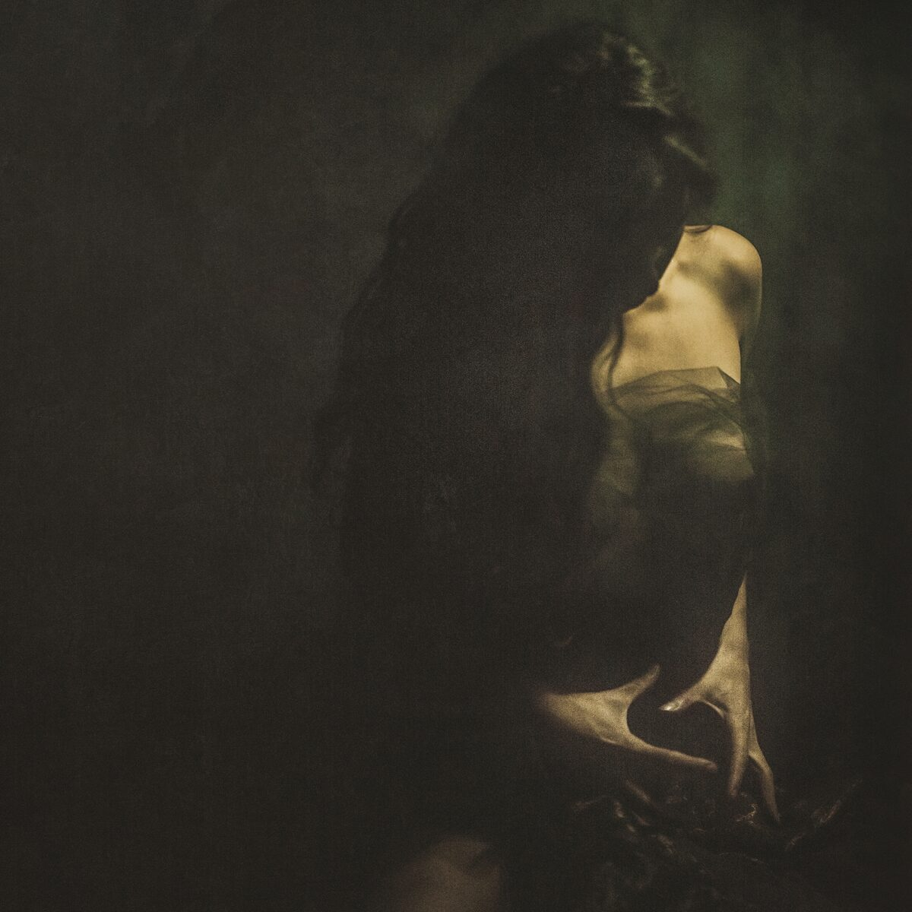
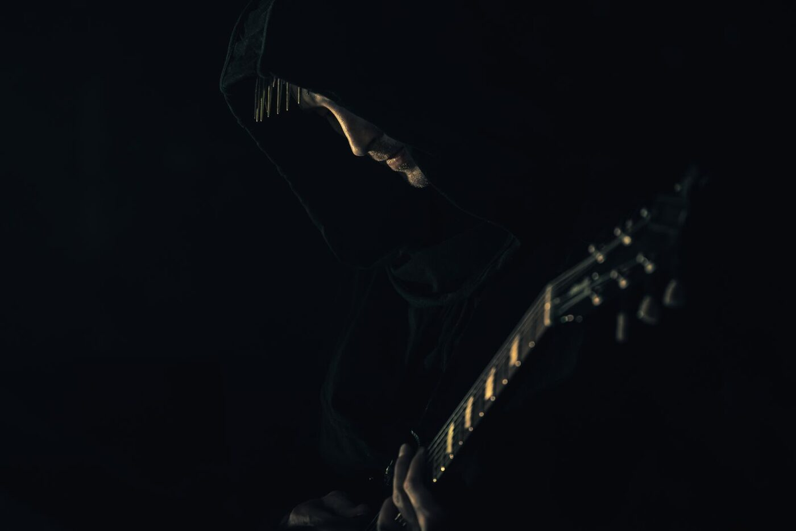

À propos

Mira Ceti
Née et élevée à Paris, Mira commence le chant à l’âge de douze ans au sein du chœur d’enfants Sotto Voce. Au fil de huit années de concerts et de tournées — de l’opéra à la comédie musicale — elle acquiert de solides bases techniques et découvre sa passion pour la scène.
Elle se tourne ensuite vers les musiques traditionnelles et étudie les techniques vocales de différentes cultures européennes. Ses voyages lui permettent d’observer le rôle de la voix et du son dans les rites sacrés des sociétés traditionnelles.
Ces influences diverses la conduisent à développer un langage musical qui puise dans les chants traditionnels de différentes cultures. Travaillant principalement autour de la notion de sacré, elle cherche à transmettre un lien de relation et de réciprocité avec ce qui l’entoure, inspiré des modes de vie ancestraux et autochtones.
Depuis les débuts du projet, Mira est accompagnée en studio et sur scène par n.hir (voir ci-dessous), producteur de musique électronique et acoustique et cofondateur du label expérimental Alcôve.
Membre de plusieurs formations, elle a cocréé le spectacle Elzear avec la compagnie équestre Les Chevaux Célestes. En 2019, elle rejoint Heilung en tant que chanteuse et tourne depuis avec le groupe.
Son premier album, Himest Mesi, sort en 2023, suivi la même année de l’EP Sól, de quelques singles, puis de l’EP Ament en 2026.

n.hir
Cofondateur du label Alcôve, n.hir associe des timbres simples et riches, cherchant à marier complexité, douceur et plaisir d’écoute. Ses influences vont de la noise au glitch, en passant par le drone. Sous le nom de Rih Len, il mêle ces styles à des claviers d’inspiration jazz et à des sonorités plus orientées club. Il travaille également comme producteur et ingénieur de mixage.